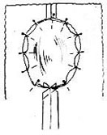
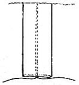
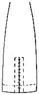
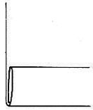
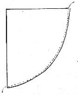
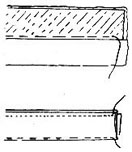
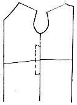
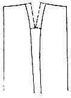

1936—Home Sewing Course
by Helen Hall
Series 4—Sleeves and Skirt Finishing
Setting Sleeves
Perfect sleeves Sleeves must be cut perfectly. They should be cut together if possible to eliminate any possibility of cutting two sleeves for the same arm. Place the right sides of the material together for cutting. If one sleeve has been cut, turn the remaining material over to the other side and repin the pattern to both sleeves. Do not remove the one sleeve; pin them both to the pattern. The pattern will be used later for marking the sewing lines.
Match armhole and sleeve
A simple method of testing the correct sleeve to set into a certain armhole is to turn the sleeve right side out, slide the sleeve into the arm that is to wear it, then find the matching armhole. Place a pin on the back or front of the sleeve cap for identification later.
Set the right side of the sleeve to the right side of the dress at the underarm seam. This is easily done if the underarm seam is pinned first. Open both seams, flatten them together, and pin. Do the same with the other sleeve. This will check to determine if both sleeves have been made for the same arm. This is a common error.
Set-in sleeve
A closely fitted sleeve set into a round armhole should be set into the armhole without gathers at the top of the sleeve, even though there will be some fullness on the sides. This fullness on the sides of the sleeve cap is necessary for smooth fitting over the curve of the arm and will make the armhole smaller than the sleeve cap. This fullness will be worked into the sleeve by the method given, turning the sleeve back over the hand when pinning to the armhole.
All sleeves set into round armholes will be set in this manner, even though they are full gathered sleeves. The full sleeves will be gathered evenly as directed in the pattern and will be pinned to the armhole as directed in this lesson by turning the sleeve back over the hand.
Armholes
The armhole of the dress should be held in shape by the sleeve or should be stayed with machine stitching (not hand sewing). The armhole should be stayed before the garment is fitted or it will be stretched out of shape; the more the garment is tried on without the sleeve or without staying the armhole, the more the armhole will be stretched.
Match sewing lines
It is important to match the sewing lines. When setting a sleeve. Many sleeves are made too large for the armhole because too much seam has been allowed. The same is true of the armhole; it becomes smaller as the seam is widened. Increasing an outer circle of the sleeve cap lengthens the outer line, and decreasing the inner circle of the armhole shortens the line. Therefore, cut small seams when cutting armholes and sleeves, not over three-eighths inch. Fit the pattern, and an extra allowance will not be necessary. If an extra allowance has been made, mark the sewing line by our quick method.
No gathers in sleeves
The modern method of setting a plain sleeve into the armhole requires no gathers, even though there is a slight fullness in the sleeve cap. The old-fashioned method originated with the full top sleeve, which required a gathering thread and all the fullness eased to the top.
No fullness at the top
Plain sleeves have no fullness at the top, for it is impossible to successfully ease in fullness along a straight thread of goods. Fullness cannot be eased out only as a bias and the top of a plain sleeve cap is on a straight thread and not a bias. Fullness will pucker when eased across the top of the sleeve. The underarm curve of the sleeve is also cut on a straight thread of material, which makes it impractical to ease in fullness at the underarm of the sleeve. Therefore, all fullness in the cap of the sleeve must be eased in on the slanting side of the sleeve cap, which is cut on the bias. The back and front of the side sleeve caps will absorb all the fullness easily.
Factory method
All factory-made dresses have the plain sleeves set in without gathers, and all the fullness is eased in on the sides of the sleeve cap without gathers. No fullness is placed at the top of the sleeve.
The sleeve will be set in with pins. After it has been pinned to the underarm seam, pin the sleeve to the armhole at one and one-half inches to the front of the underarm seam and one and one-half inches to the back of the seam. This will make it pinned flat to the armhole for three inches at the bottom.
Pins crosswise
Place all pins crosswise to the armhole and hold the sleeve uppermost with the armhole to the back.
It is now necessary to fold the sleeve to find the center at the top. Place a pin for the mark. Fold the armhole flat (not stretched) to find the center and place a pin. Then pin these two centers together, holding the sleeve toward you. Place the pins crosswise to the seam.
Three inches plain
There will also be three inches across the top of the sleeve plain. One and one-half inches on each side of the center pin.
Important
Remember: Three inches at the top and three inches at the bottom of the sleeve are plain, and if the center has been correctly determined, there will be an equal amount of fullness on both the back and front of the cap of the sleeve.
As you now look into the sleeve it is down inside of the armhole with fullness on both sides. It will now be reversed and will be turned out with the sleeve out and the armhole inside the sleeve.
Turn the sleeve cap
Place the thumbs inside the sleeve as it rests inside the armhole. Turn the fingers up and the hands back so that the palms of the hands are outward. This will turn the sleeve out, and the armhole will be under the sleeve. Do not turn back the whole sleeve. It is only the sleeve cap that will be turned back. The sleeve will now be resting as it will be when worn over the shoulder. The fullness had almost all disappeared.
Remaining fullness
All the remaining fullness will be worked out with pins on the bias edge of the sleeve cap. As the sleeve is turned back over the hands, place a pin in the center of the fullness on one side of the sleeve. Then place a pin in the center of the remaining fullness on each side of that pin and continue until all the fullness is worked out. The pins will be an inch apart. Repeat on the other side.
Uneven
If there is more fullness on one side of the sleeve than the other, then the center was not found correctly. The center at the top of the sleeve will have to be changed to even up the fullness. On very large sleeves some of the fullness can be eased a trifle lower to the underarm, as this type of arm often has a small armhole and a large arm.
Test
The sleeve can now be tested for perfect setting. Keep the sleeve wrong side out and slide the fingers into the armhole and flatten out the sleeve. Hold it in a rather stretched position to determine if there will be any drawing in the cap. If there is, there will be diagonal lines running from the pins that are wrong.
Remove the pins and the sleeve will slip to the correct place. Repin to position. There should be no drawing in the sleeve as the hands are held into the shoulder and slightly stretched. Clip the curve of the armhole before stitching.
Stitch
The sleeve can now be stitched into the armhole without basting if one is an experienced sewer. If not, baste to position and then machine stitch with the sleeve on top. Open the shoulder seam and spread it back and away from the armhole as the back edge will draw if stitched into the seam.
Remove the pins
Remove the pins as the basting or the machine stitching approaches. The heads of the pins being placed outward makes this possible.
Too much seam
Stitch on the sewing line of the pattern. If the seam is stitched too wide the sleeve will draw across the cap or the armhole will ripple. This also often happens when the inexperienced sewer attempts to set a sleeve into the armhole without any fullness. If there is more fullness than can be stitched out smoothly, take an eighth-inch deeper seam. This will reduce the fullness. Too much fullness will also puff the sleeve, which is another indication of the seam being too narrow.
Sleeves can be set into the armhole before the dress is joined at the underarm, as is done in factory-made dresses, but the above method will prove more helpful. Fullness is eased out on the bias section even with the factory method.
Sleeves extending to the neck
Saddle shoulders and epaulet sleeves are fitted at the underarm and all require some ease at the sleeve cap, but not as much as the set-in type. The fullness is equally distributed along the seam between the shoulder and armhole before the underarm seam is joined.
Raglan
Raglan sleeves are looser and are not fitted up under the arm, hence do not require fullness in the sleeve cap but the underarm is looser.
Armhole finishes Never French-seam a sleeve into the armhole. The ease that is necessary in the finished stitching makes it very difficult to French-seam, as it is necessary to allow so much fullness on the first stitching that the importance of the final stitching is ignored. If there is not a great amount allowed on the first stitching it will all vanish with the second stitching and will draw the sleeve cap.
Armhole seams should be pressed open and overcast on each side on all heavy material. Firm material may be picked if the seam is sufficiently wide for final pinking.
Sheer materials
Sleeves made of sheer material may have the seams rolled for a finish, rolling under one edge and slip stitching it to the seam.
Right side sleeve setting
It is often advisable to pin a sleeve into the armhole while the dress is on the customer. The edges of the sleeve cap are turned under and the sleeve is pinned to the dress just as it will be finished. To be able to baste this to place without removing the pins must be accomplished with right-side bastings. See rules for right-side basting.
Practice setting a sleeve by using two crepe paper napkins or handkerchiefs. Fold one diagonally and pin to represent the sleeve cap. Fold the other in half on the straight grain of material and pin shut, making it one inch smaller than the diagonally folded napkin. The smaller one will represent the armhole and the larger one the sleeve. Slide the sleeve into the armhole and follow these directions as given.
Sleeve Questions
- Should both sleeves be cut at the same time if possible?
- If the sleeves are cut on different parts of the goods, what should be done?
- Should the pattern be removed from the sleeve?
- How is the sleeve tested for the correct armhole?
- How are right sides matched?
- What is the first thing to do when setting a sleeve?
- Are underarm seams opened?
- Are both sleeves pinned to the underarm seam first?
- What is a set-in sleeve?
- Is there fullness around the cap?
- Why is it needed?
- Is the sleeve cap larger than the armhole?
- How is the armhole stayed?
- How is a coat armhole stayed?
- Should armholes be stayed before the dress is tried on?
- Should the sleeve be set in before the dress is tried on?
- Why are sleeves often too large for the armhole?
- Why are armholes often too small?
- What should be done in this case?
- Do sleeves require gathers?
- Do plain sleeves have fullness eased to the top?
- Can fullness be eased out on straight threads?
- Where are the straightest threads of the sleeve cap?
- Where are the most bias threads?
- Where is all the fullness eased out?
- Where is the fullness eased out on factory-made dresses?
- Is there fullness at the top of factory sleeves?
- How many inches should be plain at the under part of the sleeve?
- How are the pins placed?
- How are the sleeve and armhole held?
- How are the centers found in the sleeve and armhole?
- Are these centers pinned together?
- How many inches are pinned plain across the top?
- Should there be an equal amount of fullness on each side?
- How does the sleeve now appear?
- What important step is now taken that eliminates fullness?
- How are the thumbs held?
- How is the sleeve turned out?
- Is the whole sleeve turned back?
- Where is the fullness now worked out?
- How is it done?
- Is a gathering thread used?
- How far apart are the pins placed?
- If the fullness is uneven on both sides, what must be done?
- How is the extra fullness eased out on large sleeves?
- How is the sleeve tested for perfect setting?
- Should the armhole seams be clipped before stitching?
- Can the sleeves be stitched without basting?
- How is the sleeve held on the machine?
- Is the shoulder seam opened?
- Is the shoulder seam drawn back on the back shoulder seam?
- Why is this seam drawn away from the armhole when stitching?
- How is it easy to remove the pins when stitching?
- Should a perfect sewing line be followed?
- If the seam is stitched too wide, what happens?
- If there is too much fullness in the sleeve cap, what can be done?
- How are sleeves set into the armhole before the underarm seam is joined?
- Where is the fullness eased out?
- How are saddle-shoulder sleeves set?
- Where is the fullness placed?
- Is there fullness in a raglan sleeve?
- Should sleeves be French-seamed to the dress, and why?
- Should the armhole seams be pressed open?
- How are armholes finished?
- How are armholes of sheer fabrics finished?
- How are sleeves basted in when set from the right side?
PLEATS
Uses
Pleats are used both for trimming and to add fullness to the section in which they are placed. Single pleats are basted and made into the garment, while a series of pleats are usually made with a pleating machine.
Length of material
If pleating is to be sent to the pleater, the length to be pleated will b three times the length of the space to be filled. If a ten-inch space is to be filled, it will be necessary to prepare thirty inches to cover the ten-inch space. As the pleats do not overlap, it requires three inches of material for one inch of space.
Hem pleats
All material that is to be pleated by the machine should be hemmed before it is pleated, as it is difficult to make a perfect hem in pleated material after it has been steamed.
Width of pleats
Pleating is usually made on the lengthwise thread of the goods, and a uniform width is necessary to retain the straight thread down each pleat.
Seams in pleats
If pleated sections are to be made by hand, plan to have all joining seams on the underlap of the pleat. The seam is not pressed open only at the hem.
There are several kinds of pleats, each being popular in its season of fashion. Plain pleats, knife pleats, box pleats, inverted box pleats, sunburst or fan pleats and accordion pleats are some of them.
A box pleat is made with two pleats lapping in opposite directions with the fold of the joining pleats meeting on the wrong side of the garment.
An inverted box pleat is made with the edges of the two pleats meeting on the right side of the goods. An inverted box pleat is often used at the end of skirt seams to produce fullness at the lower edge.
Knife pleats
Several plain pleats made by machine are termed "knife" pleats. There are several combinations that are often used on full pleated skirts. These pleats are made only by the professional pleater. Most large department stores will furnish this service.
A complete skirt made of knife pleating is usually made with a box pleat at the center front, with the knife pleats at the side, lapping to the back or in small groups with a center box. If all the pleats lap to the back and all the skirt is pleated, the material must be prepared and pleated open as in the rules for a middy skirt. The joining seam will be at the center back or under a pleat, and it will be basted to match the pleat edge.
Sunburst pleats are made like the folds of a fan; they are sometimes termed "fan pleats". These can be made at home as an inset and are very effective. (See lesson on trimmings.)
Accordion pleats can be made only by machine. They are made so as to completely overlap one another and do not lie flat. They must be hemmed before they are pleated. A gathering thread is usually run across the top of the pleating to baste to position.
Piquoted edges for pleats
Hemstitching that is split for a piquot edge makes an excellent finish for narrow pleating. If a great quantity is to be used of one material, mark a large piece of material into the width desired, chalk mark the lines with a ruler. Allow three times the running length for the length to be made when pleated. Have these lines hemstitched and cut apart on the hemstitching. This will make the edge of each strip finished. It will require just half the amount of hemstitching if only every other line is hemstitched. This will leave one unfinished edge on each strip. Each line will be separated. Join the narrow strips under the folds of the pleats, matching the fold of the pleating rather than the thread of the goods, as the material may not pleat even.
Pleated sections
Pleated sections should be made complete and pressed flat before they are set into the garment. If there is a box pleat in the back of the waist, finish it complete before sewing to the yoke. If there is a pleated section in the waist or skirt, finish it complete even to the final pressing before it is set into the garment. All pleats at the end of seams, such as a center box in front, should also be finished before the side seams are joined. (See other lesson on pleats.) An intricate section of pleating may require right side basting to set the pleats correctly into the garment. (See rules for right side basting.)
Marking
Pleats are always marked on patterns either with lines or with symbols. These must be followed. Fold up the pattern into the pleats as they will be made in the garment so that the outer edge of the pleats can be located. This is the important mark to be followed. Mark this line in the material and also its matching line.
Crease-mark all pleats in single sections
Pleats should all be crease-marked in single sections of material as they lie on the garment when finished. The best method of marking is to mark with creases made with a hot iron.
Crease-mark the pleats
Some makes of patterns have printed lines and other makes have lines of perforations to show where material is to be folded to make pleats. A simple way to lay the pleats in the material is to pin the pattern to the fabric along these lines. Then lay the pleats in both pattern and material and crease-mark with the iron or with the fingers. (See lesson on marking seams.)
Chalk mark the pleats
If this method is not used there must be some kind of a straight line to follow. Chalk-mark the goods on the right side of the dress, making a long line with the yardstick the full length of the pleat. This outer line will later be folded back and pressed for a crease on the edge before it is basted to the pleat. This keen edge is so necessary for perfect work and it requires less time for creasing than it does to fold under a wiry piece of material for basting.
Box pleat set in
A pleated section is often set into a slash in the skirt which requires perfect tailoring to make the point perfect. The small pleated section is marked with a crease down the center. This line will be used later.
If the pleats are finished to a point, the seam must be taken very narrow on the skirt side, graduating to an even narrower width at the top and to within two or three threads of the point. The seam is an even width the full length of the inset. Stitch from the slash side of the seam. The pleated section should extend a half inch above the top of the point.
After the pleated section is stitched to the slash, press the seam open to make a perfect turning. The pleat will turn back on the seam, rather than back in a fold of the pleat. After the seam has been pressed open turn back the pleat at the edge and baste flat and press. Do the same to the other side.
Join to center
Place the skirt section right side up on the table or over the basting board and place the center crease of the pleated section to the center of the slash. Then baste the edges of the pleats to meet this crease. Cross-stitch the edge at the top so that when the final pressing is given, the pleats will not spread.
If it is too difficult to make a perfect point, open the point and join with right side basting.
Inset pleats with square top
Pleats set into slashed openings can be made with pleats on each side of the slot. The pleated section is creased down the center. Slash the opening to within a half-inch of the top, clip to the sides of the points so as to make the seam one-half inch wide.
Join the pleated section to each side. Press open the edge seams; baste the pleat back at the edge. Bring the pleats over to meet the center crease made in this pleated section before setting into the skirt. Baste flat. Turn under the point at the top and slip-stitch to the pleats. Press all flat. Stitch the top of the pleats to place from the wrong side, following the crease under the point.
Marking hems of pleats
This is one of the tricks of the tailor's trade and it is necessary to make the pleats all fall on an even line at the lower edge.
All pleats should be basted to the bottom of the open hem and will remain basted until after the skirt is hung and the hem is pressed up. The pleats are then pressed up on the hem line as they are basted shut. The bastings are then removed and the crease will be followed for the hem. This will make a perfect hem along the lower edge of the pleats, and will make the back edge of the pleat a trifle shorter than the front. This is necessary for perfect hanging.
Marking box pleats
Box pleats must have a center crease. Press mark the center line and also the outer edge of the pleat, as this center line will be used later when basting.
An inverted pleat should be carefully made; the edges must be straight and should meet perfectly. The pleat should be made in the material while the section lies flat. It must be made complete and flat stitched before it is joined to another section.
Center box cut in one with the skirt
All lines of the pleat should be marked with creases if possible. If the material cannot be creased, draw a chalk line with a long ruler and thread tack. The back edge of the large folds which will be the back center of the pleat should be marked with a crease to make it straight, as this will be the line that will be matched with the two folds of the pleats as they meet.
After the back and edges are marked, open the pleat, place it flat on the table and baste the edges of the pleats to the center line of the fold. Baste the full length of the pleat and do not remove the bastings until the garment is to be hemmed.
Separate back section
A box pleat can be made with a separate section at the back. This is often a saving of goods, as this pleat is not cut on a fold.
Mark the edges of the pleats and baste together if pleat is at the lower part of the skirt. Press the seam to one side to crease for perfect stitching. Machine stitch as far as desired to the top of the pleat. Press the seam open and flat.
With the skirt section wrong side up, slide the basting board or magazine under one side of the pleat. When the back pleat section is placed to position, baste it to the pleat as the pleat rests flat on the basting board. If the basting board is not used the stitches will be caught to the front of the skirt. The flat surface will permit the pleat to lie perfectly flat with no puckers. After the side seams of the pleat are stitched, press the pleat flat. Do not press open the seams. The only part of a pleat seam that is pressed open is that portion inside of the hem.
Stitch across top
All box pleats that do not extend to the top of the skirt should be stitched across the top of the pleat. This line will follow the pattern indication, or if the material has a definite line of material or stripe, follow this line. Otherwise, the stitching can be straight across, pointed downward or upward. The upward point is more graceful and relieves the strain on the seams. Tack or tie the point well, as there is a great strain on this point in closely fitted skirts.
Seams opened
When an under-lapping pleat is made at the bottom of the side seam of a skirt, it will be handled in the same manner, basting the side seam the full length to the lower edge of the skirt through the pleat. This basting will remain in the pleat until the final finish. This basting insures a keen edge on the pleat, a perfectly straight line down the side, and a perfect edge across the bottom of the pleat. It is necessary to baste the line to the bottom to secure accurate results. Pleated skirts for uniforms or middy skirts that are fitted at the waist are made by a different method.
A middy skirt
The skirt is made open and flat. It is measured from the hip size for the amount of material to have pleated, and the hip size is also used for the measure to which the skirt is made. Serge is the material generally used. It is fifty-four inches wide and it will require two or more skirt lengths. One length is cut down the fold and half is sewed to each side of the front section so as not to have a seam near the front. Figure three times the size of the hips and this will give the correct amount to prepare for the pleating.
Hem
The seams are pressed open. Press the goods down the center. Decide on the width of the pleat. Measure a center box pleat at this width. Mark all pleats at the hip line and also at the hem line. Chalk lines will connect these marks after the pleats are spaced. Do not mark at the waist as this will be changed later to fit closer.
Mark the pleats
Work from the right side of the material. If the pleats are to be two inches wide, mark every two inches from the center front both at the hip line and at the hem line for the pleats. Place the material on the table and chalk mark each line the full length, using a yardstick.
Pleat edges
Every fourth line will be the outer edge of a pleat counting from the first line drawn. It requires six inches to make one two-inch pleat, three times the width. Time will be saved if the outer edge of each pleat is pressed on the turning, picking up the goods along each six-inch line and as the material is folded double on this line, pressing it folded in one crease. Pin the ends to the press board if so desired. It will hold the ends of the pleat in place. Plan to make the joining seams of the material invisible. If the seams are pressed open they may be placed anywhere under the pleat.
Baste to the hip line
Lay in the pleats with pins as marked, lapping all toward the center back. There will be a seam at the center back or under one of the back pleats after the skirt is finished. When they are all pinned to place at the hip line only, measure to see if the hips are the desired width. If not, slide the pleats either way a trifle to secure the correct hip size. When the correct size is secured, slide the basting board under the pleats and run a basting thread along the hip line to hold the pleats in position. Then baste each pleat to the bottom of the skirt following the chalk lines.
Waist line
Use a belting or tape for a waist stay. (See lesson on belts.) Work from the center. Pin the center box at the center of the belt. Pin each center back to the belting, measuring the exact belt size. There should be an extension of the belting for the underlap of the closing.
All pleats will remain on the straight thread of material on the outer edge of the pleat. All over-lapping will be made on the wrong side of the pleat. The hip pleats should have the greatest over-lap as there is more curve at the hip.
After the hip line and waist line are adjusted to size, catch a tape across the hip line on the wrong side at four inches below the waist line, catching the back edge of the pleat. This tape will remain on the skirt to hold the pleats in place. There should also be a tape around the hip line. The tape is tacked on one edge only to the under-fold of the pleat.
If desired, the pleats can then be stitched from the waist to the hip line, stitching close to the outer edge from the right side of the skirt. Apply the belt as for skirts.
Middy skirts attached to a waist lining can be made of straight pleating without fitting in at the waist line. The skirt is hemmed and pleated as directed and hung from the hem upward.
Practice each lesson by making pleats in crepe paper. The lesson will be quickly learned and will be interesting.
Questions on Pleats
- What is the length measured for group pleating?
- Should pleating by machine be hemmed first?
- Are pleats made the same width the full length of the pleat?
- What are knife pleats?
- Where is the closing seam on pleats?
- What is a box pleat?
- What is an inverted box pleat?
- What are sunburst pleats?
- What are accordion pleats?
- Where do they differ from other pleats?
- Are they hemmed before pleating?
- How is the top edge furled in?
- How can narrow pleats be finished on the edge?
- How can several strips be finished?
- How are pleated sections made in a skirt?
- When is a box pleat made in the skirt?
- Should pleats be made complete before the side seams are joined?
- When is right-side basting used?
- Should pleat symbols on patterns be followed?
- What lines of the pleats are important to follow?
- How should all pleats be marked in single or double sections?
- What is the best method for marking pleats?
- Should a straight pencil mark be made on all edges of pleats on pattern ?
- What lines are pressed for the pleat lines?
- If crease marks are not used, what kind of a line will be followed?
- Should box pleats have a center mark?
- How far down should pleats be basted?
- When is the basting removed?
- Is the center line basted the full length in all box pleats?
- Is the lower open section pressed back on a box with separate back section?
- How is the basting board used?
- Is all the back section basted flat?
- Are the side seams pressed open on box pleats?
- Is a single box pleat stitched across the top on the skirt?
- In what line is it stitched?
- Should the point be tacked and why?
- How is a small pleated section marked when set into a slash in a skirt?
- Is the seam made wide or narrow?
- How is the material stitched to the slash?
- From which side of the seam is the stitching made?
- How far above the top should the material extend?
- What is done after the extra section is stitched to the sides?
- Where is the side seam turned?
- Is the final basting made with the material right side or wrong side up?
- How are the edges treated and for what reason?
- If difficult to make perfect, what should be done?
- Does the basting remain in the pleats for the hem marking?
- Are fitted middy skirts made the same as other pleated skirts?
- What size is used as a guide?
- Is the skirt made open?
- How many lengths of 54-inch material will be used?
- How are the pieces joined?
- How is the length to be pleated measured?
- When is the hem made?
- Are the seams pressed open in the joining seams?
- If a two-inch pleat is used how will the center box be measured?
- Where are all the pleats first measured?
- Where is the second line of measurement?
- Will the pleats line be marked?
- Are the pleats also marked at the waist line?
- If the pleats are two inches wide how will the pleats be marked?
- How many inches are necessary to make one pleat?
- What is done to each outer pleat edge?
- How is the pleat held to the press board?
- Should the joining seams be visible?
- Are the pleats pinned or are they basted first?
- When and how are they basted?
- How is each pleat basted?
- What is used for a waist stay?
- Where is the belt started?
- Which edge of the pleat remains on the straight thread of material?
- Which edge of the pleat is altered at the waist line?
- Where is the greatest overlap of the pleats?
- Where is the tape stay placed?
- Where is it tacked?
- Can the pleats be flat-stitched as far as the hip line?
HANGING SKIRTS
Hem requisites Skirts should be hung equidistant from the floor unless otherwise designed; all pleats should be flat and should hang on an even line at the lower edge. The hem should not be too wide; the stitches should be invisible and should be handmade. The hem should be pressed to a knife edge at the lower edge but should not be pressed through to the right side of the goods.
Baste in a test hem when making a dress. One can easily determine the desired length of the skirt if a hem is basted. The uniform length all around the skirt should then be found before making the hem.
Hems on skirts should, as a rule, be not wider than two and a half or three inches, finished. A two-inch hem is even easier to handle, and if the skirt is circular or cut with a decided flare, a two-inch hem will be too wide. In such a case a narrow rolled hem is often the best to use, especially on thin materials.
Wide hems
Wide hems can be made in children's dresses to allow for "let out". This wide hem allowance can be folded under the first turning, thus making the hem appear much narrower. The skirt can then be let down the width of the hem. This will make a hem of three thicknesses rather than two, but is advisable when a "let-out" is desired.
Fit hips
The skirt should be belted before it is hung. A tight belt will shorten the skirt in the back as it will pull the skirt over the curve of the back at the waist. The hip line should also be fitted and the same shoes should be worn as will be worn when wearing the dress; different heels will alter the length of the skirt. Stand firmly on both feet, a slouching posture cannot produce a straight hem.
Sagging Circular or semi-circular skirts made of loosely woven materials will sag on the bias sections. Different materials will sag more or less according to the material used. Circular skirts should hang for several hours or even days to permit the weight of the material to sag down the necessary amount.
If the dress is to be finished quickly, it is advisable to press the material on the wrong side, drawing down on the bias sections as it is pressed. This will draw out the material the same amount that it will eventually sag when it is worn for some time.
Trial hem A trial hem should be basted into the skirt before the first fitting. The skirt can be hung, even if the skirt is basted up too short.
If the hem is basted too short or if a hem is to be lengthened, hang the whole skirt one inch shorter than desired. After the skirt is removed these pins are chalk marked for placement and the hem is then marked one inch lower.
Cross-pins
If there are only one or two short places in the skirt, hang the skirt the correct length on all the rest of the skirt and at the short places, place cross-pins. This will indicate that the skirt must be lengthened one inch at these pins.
Cross-pins are also used to denote some important alteration. Pull the pin into the goods up to the head so that it will not slip out. Place cross-pins for buttons, for loops, for slashed openings, for pocket placement, etc.
Use a ruler or square
A tailor's square is the most satisfactory tool for marking hems on customers. The short arm of the square rests on the floor and the long arm stands upright loosely in the hand that holds the skirt. A yardstick may also be used.
A ruler can also be used, but is not as convenient. A rubber band placed at the correct length on the square or the ruler is an advantage if the eyesight is poor.
Pins or chalk Marking can be made with pins or with tailor's chalk. The latter is quicker to use, but any changes must be rubbed off immediately or they will be confusing later. Pins, when placed horizontally, make a splendid indication of the length to be seen in the mirror.
After the length has been found, turn up a portion of the front of the skirt as a trial so that the customer can see the length she has selected. If she is particular it may be well to pin up the hem all around as many judge the length by the back of the skirt rather than the front.
Circular skirts
When hanging circular skirts, permit the skirt to hang in pleats at the lower edge and place a pin for the lower edge mark through the complete fold. The fold is then press marked as directed for hems in pleats and is trimmed off later when lying flat on the table. The curve can then be evened.
If the skirt is trimmed off on the customer, the row of pins should be placed first, then the trimming should be at least one-half inch below the pins if the hem is to be rolled. It is not advisable to trim off a hem on the customer, as it is difficult to secure a straight line later. The heckled edge must be again trimmed, and this may make the skirt too short.
 Hems in pleats
Hems in pleats
All hems in pleats should be marked with the pleats basted shut and then press-marked under at the turning. This will make the back edge of the pleat a trifle shorter than the front edge and it will never drop down at the back. The finished skirt should fit perfectly with the pleats basted shut, basting to the raw edge of the skirt before hanging. Do not depend on open pleats for loose fitting.
Seams open
All joining seams inside the hems of pleats should be pressed open before turning. When the hem is basted up the seams should lie flat against each other; clip the seam just above the top of the hem.
Pleated skirts Hems on solid pleating, such as middy skirts, should be made on the straight thread of material and be made complete before the skirt is fitted, fitting from the hem upward.
The lower edge of all stripes and plaids should be as straight as possible with the thread of the goods, so as to follow the line of the stripe. This may require additional darts in the back of the skirt at the waist line.
Hanging a skirt on one's self
It is seldom possible to cut a dress or skirt to the exact length without a guide for individual cutting. The posture of the figure influences the hanging of the skirt, and it is therefore necessary to hang each skirt on the individual.
A skirt cannot be marked correctly by laying it flat on a table. Every material sags to a different degree and this will make the hem uneven in places even though the pattern has been followed perfectly.
The skirt must be suspended to secure the correct length. The best plan is to put the dress on and hang it to the desired length.
The previous lesson dealt with hanging skirts on a customer, while this lesson deals with hanging a skirt on one's self. It is not difficult if the following method is used:
Any length marked on the skirt will give an even hanging if it is marked below the curve of the hip line. A table is a convenient height to use as a guide; a yardstick can be used if so desired.
Stand close to a table for marking. Be sure the height of the table is below the curve of the hip line. Mark with tailor's chalk or a row of pins.
As you stand close to the table, place a pin in the skirt at the height of the table. Turn and place another pin four inches from the first pin and continue all around the skirt, placing the pins or marking the chalk marks about four inches apart.
Mark the back
At the back, pick up the skirt at the table height and bring it to the front, so as to place a pin in it. A chalk mark can be made in the same manner. This will make a line equidistant from the floor.
Pin up a hem Before removing the skirt, reach down and pin under a trial hem to be sure that the skirt is the desired length.
Also note if there is a short place cut in the skirt which may make it necessary to make it even shorter than desired.
Use a coat hanger
Remove the dress and select a coat hanger with a cross bar. Slide the waist of the dress through the hanger above the bar. Do not place the hanger in the shoulders of the dress. The skirt or the dress must be hung over the bar at the waist line, and be pinned to the bar along the waist line to insure a straight line for marking. The dress will then be hanging as though it had been held up by the waist line with the waist dropping to the back of the dress.
If the hook of the coat hanger is turned, it can be hooked over the top of an open door and the lower edge of the skirt will be at a convenient height to mark.
Measure the desired length
Measure the height of the table and this will give the number of inches from the floor that the mark on the skirt was made. If the skirt is to be ten inches from the floor, then subtract ten inches from the table height as represented by the marks on the dress. Measure the desired length down from the marks on the skirt. If the table is thirty inches high and the skirt is to be ten inches from the floor, measure twenty inches down from each pin to secure the desired skirt length at each pin.
Circular skirts
If the skirt is quite circular, it is advisable to place a ruler across the lower edge of the skirt after several marks have been made and chalk-mark across the fullness, gradually shifting the fullness until the lower edge is marked correctly.
Questions—Hanging Skirts
- How should pleats hang at the lower edge?
- Should the hem be wide?
- Should the hem be pressed through to the right side?
- Should a test hem be basted into the dress?
- How wide should a hem be made?
- How does a flare affect a wide hem?
- What kind of a hem is used on sheer materials?
- How can a wide hem be made on children's dresses?
- Should the belt be tightened when the skirt is hung?
- Should the hips be fitted first?
- What shoes should be worn?
- How should the figure stand?
- What happens to thin or loosely woven materials?
- Do materials differ as to sagging?
- What should be done to circular skirts?
- What is done if the skirt must be finished?
- What is done if the trial hem is basted too short?
- What can be done to one or two short places?
- What are crossed pins used for?
- What is an excellent tool to use for hanging skirts?
- In marking, what can be used to aid poor eyesight?
- How is the hem marked?
- How is it tested?
- How are circular skirts hung?
- How is the fold marked later?
- How is the skirt trimmed off on the customer?
- How should all pleats be marked at the hem line?
- Should seams in hems be pressed open?
- How are the hems of solid pleated skirts hung?
- How should the lower edge of stripes and plaids be hung?
- Can a skirt be hung correctly by marking it flat on a table? Why?
- Why should a skirt be suspended for hanging?
- From what line on the figure does the skirt length vary?
- What line is even?
- How is the skirt marked on one's self?
- Should the hem be tested, and how?
- How is the skirt then suspended for the final hanging?
- What line is held in place with pins?
- How is the length measured?
- How is the hem on circulate marked?
- How is the final marked checked?
HEMS
Mark the edge
Mark the lower edge of the skirt as directed in hanging skirts. Remove the dress and place it on the press board wrong side up. Press up the hem on this mark, making the crease even from mark to mark. This crease will test any possible mistakes in marking and will insure a perfect turning. This final crease marking applies to all skirts whether the hem is wide or narrow. It will be crease-marked before it is trimmed off.
Press out fullness
When a skirt is quite circular it is sometimes advisable to run a gathering thread along the top of the hem to draw out the fullness, but in most materials a satisfactory result can be attained by pressing.
After the hem has been crease-marked, baste it on to the skirt at a quarter inch from the bottom of the skirt. After this has been done, place the skirt on the press board wrong side up and press out the fullness, pressing from the lower edge of the hem to the top. It may be necessary to use moisture as directed in the rules for pressing. Continue pressing until all the fullness disappears. Wool will shrink to shape more readily than any other material, but this fullness can be pressed out of practically all curved hems.
Trim off
After the fullness has been pressed out of the hem, it should be trimmed off to an even width. Check the general width to find the narrowest place in the hem, and if this place is not more than three inches wide, all the hem should be marked to this width.
Notch a card at the desired width for the hem; a button card or a snap fastener card is especially good. After the hem has been trimmed off, it is ready for hemming.
Turn under the edge
Some dressmakers prefer to turn under the raw edge of the hem and either run it down by machine an eighth of an inch from the edge or make a running stitch through it. This will be done before the hem is basted to the skirt. It will then be pressed before applying. The hem is then ready for basting to the skirt with the skirt wrong side up. Slide the press board into the skirt and under the portion of the hem to be basted. The hem can then be properly arranged, the seams matched, and it can be pinned and basted flat.
All wide hems should be basted flat. It is very unsatisfactory to baste hems in the hands. The hem stitches are made in the hand, but the hem should be basted to the skirt with the skirt flat on the table wrong side out and the basting board or magazine slid into the skirt under the hem.
Press seams open
Press open all seams of the skirt that will be under the hem; especially is this important in pleats. Make these seams match as the hem is basted. Never stretch the hem across the seam, for it will twist when finished. A twisted seam cannot be straightened in pressing.
Heavy hems are finished with ribbon binding
Heavy material is not turned under at the edge of the hem. The edge is finished with ribbon seam-binding or a commercial bias binding, before it is caught to the dress. (See lesson on binding.) The ribbon binding should be basted to a curved hem after the hem is pressed up and the fullness is pressed out. The ribbon is basted to the raw edge of the hem with the ribbon flat. The basting board is slipped under the hem for the basting between the hem and the skirt. If this method is not used, the ribbon will either be ruffled or the hem will ruffle. The few minutes extra time spent in making the hem perfect is well worth the effort in the neatness of the finished garment.
Wide machine hems are seldom used
There are various widths of sewing machine attachments for hems, but they are used for narrow hems and are excellent to use when hemming long lengths of material. Wide hems should be turned by hand, basted, and then either stitched on the sewing machine or by hand. Very few dress hems are made on the sewing machine, even in better made cotton house dresses. If the hem is to be machine made, be sure to lay it flat on the table and pin it at the seams before basting. If the seams do not overlap perfectly the seam will twist when finished.
Creasing hems by folding
Material, such as gingham, that holds a crease can be creased in the hands. Turn the first turn of the hem by creasing with the fingers and folding the edge up in the fingers as the creasing progresses, similar to making a set of accordion pleats about an inch wide.
Rolled hems without sewing
Organdy hems can be rolled between the thumb and finger, especially on the bias, and will remain rolled without sewing but will not be washable. Dampen the fingers with the lips and roll up the edge, rolling about an inch at a time. Practice will make perfect. This is especially useful in making flowers and ruffles.
Machine stitch narrow hems
Hand-sewed narrow hems should be machine-stitched close to the raw edge before turning—about one-eighth of an inch. As the hem is rolled under with the point of the needle it is slip-stitched to the skirt. Trim off the rough threads as the hemming progresses. One end of the hem can be pinned to the basting board and the hem can be made very quickly and much narrower than can be turned without the stitching. The stitching also prevents the skirt from rippling on the hem.
Faced hems
Faced hems are made differently. The facing must be cut on the same thread of material as the hem or a true bias. The former is preferable. The facing may be made in several pieces, but all the joining seams should be made on a lengthwise thread of the material never on a bias. The seam must then be pressed open. The facing is basted to the skirt after it is trimmed off even at the lower edge. The facing is held a trifle tighter than the dress so that it will roll back when turned.
After the facing is stitched to the skirt, press open the seam and trim it off to an eighth inch on the hem side. The facing is then turned back, sliding the basting board into the skirt and under the hem for the basting. Draw the facing back from the edge an eighth inch. Baste the hem at the lower edge along the seam line.
This will make the joining seam invisible. After the facing is pressed back, join the two unfinished edges and slip-stitch one to the other. (See right side basting.) Stitch the seam and press open. Turn under the top edge and finish with a tailor's slip stitch.
Velvet hems finished with ribbon
Velvet weaves and heavy materials such as broadcloth and heavy coatings should be bound with ribbon seam binding before hemming.
Tailor's Slip Stitch—The Invisible Hem
Invisible stitch on both right and wrong side
The tailor's slip stitch is used for hems, facings, coat linings and any invisible sewing.
This is an invisible stitch with no threads visible on either the wrong or the right side of the goods, if made correctly. Prepare the lower edge as directed; trim off; turn under the edge, and baste the hem as it lies flat on the basting board, basting one-quarter inch from the edge. Lift the skirt and turn the hem back from the eye, making a fold of the skirt at the top of the hem with the hem dropping to the back.
The top of the hem now protrudes a quarter inch above the fold just made. Catch a thread on the skirt and in the same operation slide the needle into the fold of the hem and draw out the thread; again catch a thread of the skirt and in the same operation slide the needle into the fold of the hem. Continue to the end of the hem.
Make stitches loose
When the hem is turned back, all the stitches are invisible and if only a thread or two of the skirt has been caught into the needle, there will be no stitches visible on the right side. The looser the stitches the more invisible they will be. This is especially important to remember when hemming coats or heavy skirts.
When making a tailored hem, it is possible to take long stitches, much longer than can be made with any other kind of a stitch. For this reason a hem can be made very quickly.
When using this stitch for coat linings, the stitches must be very close together.
Practice all hems on materials.
Questions—Hems
- Is it necessary to gather the upper edge of a wide hem?
- Where is the first basting made when turning the hem?
- How is the fullness in the top of the hem eliminated?
- At what time is the hem trimmed off?
- How wide should the hem be made?
- What do some dressmakers do to the edge?
- How is the hem basted to the skirt?
- How is the press board used?
- Should all hems be basted flat?
- What is done to the seams under the hem?
- When is ribbon seam binding used?
- When is the binding basted on?
- Where is the basting board placed?
- If hems are machine stitched, how are they made?
- How are organdy hems rolled?
- How are edges creased in the hands ?
- How are narrow hems stayed for hand hemming?
- How are velvety and heavy hems finished?
- How are hem facings cut?
- If facing is pieced, on what thread of material is the seam made?
- Are all of the joining seams pressed open?
- Are all of the seams stitched?
- What is done to the edge seam of the facing when stitched to the skirt ?
- What width should the finished seam be made?
- How is the edge finished?
- When is the last joining seam of the facing made, and how?
Tailor's Slip-Stitch
- Can a hem be made invisible on both the right and the wrong side?
- When is the tailor's slip-stitch used?
- How is it basted for hems?
- How is the hem held in the hands for the stitch?
- How long are the stitches?
- Should the stitches be drawn tight?
- How is a coat lining finished by hand?
- How is the seam held?
- How large are the stitches?
BELTS
Perfect belts
It is quite important to make the belt correctly. It must be cut right, made right and pressed right to secure a perfect effect.
Belts should always be cut on the lengthwise thread of material and not on the crosswise. This is a common error. A crosswise cut belt will twist, but the lengthwise will always remain flat. If there is not sufficient length to make the belt on the lengthwise, it is advisable to piece it rather than make it on the crosswise. A belt of sheer material should be lined, either with the same material or a plain color matching the background if the material is figured.
Plan the belt
Plan to cut the belt when laying out the dress; it should be cut or torn down the edge of the selvage. A torn belt will assure an even width, which is quite essential. If it is not torn, be sure to measure the width and crease the line for cutting, as an uneven belt is very noticeable.
Pin edges The belt will twist, even when cut correctly, if the edges are not pinned and matched on the thread of the goods before stitching. Pin the edges as they lie flat on the table; then baste or stitch.
Press open the seam
This is one of the tricks of making perfect belts. Press open the seam after sides of the belt are joined and before it is turned. This can be accomplished by first pressing back one side of the seam, then placing the seam down the center of the belt and pressing it.
The end of the belt is then stitched, either with the belt seam down the center or at one side. After the end is stitched the belt is turned.
Turn the belt
To turn the belt, clip open a few stitches three inches from the finished point. Open the seam for an inch or more, hook a safety pin to one side of the seam and push the safety pin through the belt. Push out the point with a pencil or closed scissors. Press the finished belt according to the rules for pressing. Moisture must be used to make it lie flat with keen edges.
Stitched belts
Belts on tailored garments are often filled with several rows of machine stitching. It is important to cut this belt of even width, as any variation in the width will be more evident when the belt is stitched.
This type of belt requires an extra reinforcement. If the belt is cut double, reinforce one side only. In this case, there will be but one seam allowed on the reinforcement.
Cut the material from pre-shrunk, unbleached muslin or thin tailor's canvas, cutting it on a true bias. Allow but one seam if the belt is cut double. After the belt has been pressed double to secure an edge line, baste this strip to this creased edge with matching thread; the thread will not be removed. This basting holds it in place when the belt is turned.
Pin the belt together and baste the three edges of goods down the side, the two edges of the belt and the one edge of the muslin. After it is stitched, trim off the seam as close as possible to the stitching. Turn and press.
Chalk-mark the lines for the machine stitching, as many rows as are desired. They are usually made about a quarter-inch apart. The belt will be filled completely with the stitching. Press when finished.
 The buckle for a lapped belt will be placed on the left side of the belt,
lapping it from the right to the left as in the rules for closing women's
garments. If the buckle has a tongue, it must be pushed through the material
and the end sewed over the buckle. Slide buckles will be sewed to the left
side of the belt. The ends should extend at least two inches beyond the buckle
when fastened. A longer tab must be fastened with a snap.
The buckle for a lapped belt will be placed on the left side of the belt,
lapping it from the right to the left as in the rules for closing women's
garments. If the buckle has a tongue, it must be pushed through the material
and the end sewed over the buckle. Slide buckles will be sewed to the left
side of the belt. The ends should extend at least two inches beyond the buckle
when fastened. A longer tab must be fastened with a snap.
Link buckles must be carefully measured with the belt. Sew one side of the link to the belt and try it on. Slide the other end through the link and measure the exact size before cutting.
Eyelets
Eyelets for the belt tongue can be made by hand or machine. For the hand-made eyelets, punch the hole with a stiletto or a nut pick, making the hole the size of the tongue of the buckle.
The hole is then worked with buttonhole twist either with over-casting with close stitches or with a buttonhole stitch.
Metal eyelets
Metal eyelets can be set into the belt by a machine at a novelty shop where pleating and buttons are made. Three or four eyelets are usually sufficient. This gives the belt a tailored effect. These same eyelets can be set into the waist or yoke of the dress for lacings.
Buckles made
Buckles can be covered with material either by the button maker or by hand. Cut a piece of material one inch larger than the buckle. Cover the piece with fabric patching paste and place it over the buckle with the corners on the bias portion, or the greatest curve on curved buckle. Stretch the material over the buckle, stretching as smooth as possible at the corners, pulling out the fullness on the bias. Trim off the surplus material after it is dry, as the inside of the buckle will be covered with a separate piece. Stitches taken across the inside of the buckle will assist in holding the material in place. Cut a scrap the exact size of the buckle and paste to the inside after the surplus goods is removed; catch to the material at the edges.
Attach belts
It is advisable to attach the belt to the dress so that it is always in place. Attach at each under-arm seam and at the center back. If the belt is not tacked to the dress in the back, it will slide to the front when the dress is put on and the dress must be removed to change it. Belts with the seam on the edge will be attached with the seam at the lower edge of the belt.
Bar tacks
The modern method of attaching belts is with bar tacks. This eliminates the loops at the sides and will give a loose appearance to the belt. Pin to place; fold the belt back over the finger at the seam, with the center of the belt at the waist line. Take several stitches from the belt to the side seam, holding the belt away from the seam a quarter of an inch. After several stitches have been taken, wind the thread around the stitches with the head of the needle and tack. It is not necessary to buttonhole around the thread.
 Thread
loops wound
Thread
loops wound
If a thread loop is desired at the side seam, it will be made with buttonhole twist. Take a small stitch on the right side of the dress, after bringing the thread from the wrong side to conceal the knot. Start the thread half the width of the belt above the waist line, take the second stitch below the waist line at half the width of the belt. Repeat this stitch until there are at least four threads, then with the head of the needle wind the thread around and around these threads. Tack at the bottom with several stitches.
Thread loops crocheted
Thread loops can also be crocheted with a crochet hook or with the fingers. Start the loop with the needle to tack the thread to place. Take one stitch for the first loop of thread, reach through this loop and draw out the thread into another loop and continue till a long strand is crocheted. At the end pull the thread through the last loop to knot it and then thread the needle and tack the thread to the dress.
Tailored loops
Material can be stitched into a tailored loop (see lesson on loops), and used for a belt slot. In this case the loop is prepared and is stitched into the side seam above and below the waist line when the dress is made. This is often found in ready-made dresses.
Belting
Skirt belting is used only to sty the waist line of a skirt. If the material is heavy, which is usually the case in separate skirts, seam binding, either silk or cotton, should also be used to reduce the bulk of the seam.
Baste the waist line of the skirt over the belting with the belting extending at the top of the skirt. It is not turned back until later. Allow for the width of the seam; and match the belting to this line which will be the top of the skirt when the belting is turned back.
Be sure to measure the exact size of the waist and pin the belting to the skirt at this size, measuring from the finished edge of the front to the seam line of the placket in the back. The extra length of belting extending under the placket at the back must be allowed. Place the skirt on to the belting and baste or pin to place; then cover the seam with seam binding pinned to place. As it is difficult to baste belting, it may be machine-stitched to place without basting if a sufficient number of pins are used to hold it in place. Both edges of the binding will be flat-stitched to the belting.
After the skirt is stitched to the belting, it is turned back at the top and basted flat, then machine-stitched one-quarter inch from the edge of the waist line. Hooks and eyes are placed after the top is finished and are slid into the binding and sewed back before the belting is tacked to the edge of the seam.
Questions—Belts
- Why should they not be cut on a crosswise thread?
- When should the belt be cut?
- Why should a belt be pinned the full length before stitching?
- Is the long seam of the belt pressed open?
- How is the seam pressed open?
- When is the end finished?
- How is a belt turned?
- When is a stay made in a belt?
- What is used for the stay and how is it cut?
- How is it attached to the belt?
- Are the seams trimmed from the stay?
- Are the seams pressed open?
- After turning, is the belt pressed to a keen edge for stitching?
- How are lines marked for stitching?
- How wide are stitching spaces made?
- Where is a buckle placed?
- How is the buckle attached to the belt?
- How far should the end extend?
- What are the four methods of attaching belts to dress?
- How are bar lacks made?
- How are thread loops made?
- How are thread loops made with crocheting?
- How are tailored loops attached?
- What can be used for belting?
- When applying, does belting extend above the skirt?
- How is the seam binding applied?
- When is the belt turned under?
- How is it held down?
- When are hooks and eyes sewed on?
PLACKETS
Where made
Plackets are skirt or dress openings made at the side seam at the left of the skirt. The dress placket extends five inches into the side seam on the waist and down five to seven inches on the side seam of the skirt. This opening will permit the closely fitted waist to be slipped over the body when the garment is put on. If the waist of a dress is made loose or the waist line is quite large, it will not be necessary to make a placket. The figure with a very small waist requires a longer placket than the figure with a large waist line.
How lapped on skirt
The placket overlaps the back with the front edge turned under. It is closed flush with the seam and with the back edge extending under the seam. It is closed with snaps. If the waist is fitted quite close, there should be a hook and eye at the waist line.
There are several kinds of slashed openings on necks and sleeves but they are not termed plackets. An opening at the seam of the sleeve may be finished according to the rules for plackets, and a slashed opening either in the sleeve or at the neck might be finished with a continuous placket finish.
A slashed opening on the back edge of a sleeve laps from the front to the back. If the opening is on the seam of the sleeve which is inside of the arm, it will also lap from the front to the back but on the other side of the sleeve. Both openings should lap to the back so that the wearer cannot look into the gap.
Types of plackets
There are several methods of making plackets but only three are used in practical dressmaking. Others may be used in tailoring but are quite intricate. The continuous placket is used on all material that is not heavy. As the material is doubled it will be too heavy when used on heavy materials. Heavy materials can either be finished with a faced and bound placket or with extended seams.
Mark the sewing line
All plackets, however made, should be made on the sewing line of the garment. For this reason, the sewing line must be marked. It is advisable to baste the side seam to the top and press the seam open at the placket line to make a crease on both sides of the seam. This line must be followed.
All placket material should be cut on the lengthwise thread of the material. Crosswise or bias material will not lie flat, and will produce a bulging effect that is not produced with the lengthwise. The placket edge must not be stretched; both sides must match. This makes it advisable to pin the placket strip to the opening before it is stitched and then measured to determine the matching length. Plackets on dresses should be finished narrow, about one-half inch wide, and usually with a continuous placket, as the stitches must not show on the right side. If the placket is made too wide, it will draw on the seam at the waistline when turned back.
Continuous placket seam clipped
Continuous binding for the placket is the most popular, as it is easily and quickly made and is finished either by machine or by hands. Cut a strip of the goods of silk or cotton an inch and a half wide with a selvage on one side. The selvage makes a strong edge. When basting on the finish, hold the skirt on top and the finish strip underneath. It will not stretch as easily when basted in this manner. The seam at the hip must also be clipped into the sewing line so that the placket opening can be stretched into an opened line as the finish is applied. Trim back the sewing line to within a quarter of an inch of the crease, which should have been made when the seam was pressed back to mark the placket.
Finished by machine
For the machine finished placket the dress is held right side out, the finish strip is pinned under the dress or skirt at the top on the back portion, the seam will be on the right side. Pin the full length, place a pin EXACTLY at the sewing line where the stitching ends at the bottom. (This is important.) Straighten the placket out and pin the finish to the front side. After it is pinned to place, measure to see that both edges are exactly the same length before stitching. This may prevent ripping later. Baste and stitch, following the sewing lines on the dress and be sure to stitch to the point and not curve off at the end of the seam. The placket is then pinned, and basted over the seam, completely covering the first stitching. Watch the bottom. Be sure not to twist the material when stitching. The finish should be straight and flat.
Hand finished Follow the same method as explained in machine-finished plackets but turn the dress to the wrong side rather than the right side. This will make the first seam on the wrong side of the garment rather than on the right side as it is made. In the machine finish. The final finish will be made on the wrong side, while the machine finish is on the right side.
Cut the material on the lengthwise thread and baste it on by the same method, starting at the top and pinning to the bottom to the clipped seam and up the front edge. Test to determine if both edges match. Stitch and then finish by hand with a slip-stitch.
Pressed
Turn the dress to the wrong side for both types of plackets. Baste or pin the two top edges of the finish together while the binding is open; then machine-stitch across them twice. Trim off. The front edge will then be pressed under the front, and the back edge will extend. The snaps can be sewed to the finish without the stitches being visible.
Faced and bound
This finish is used on heavier materials, and is made with two short strips rather than with one long strip. The front strip is cut one and a half inches wide and the back two and a half inches wide. They are both made a half-inch longer than the opening. This placket will be finished on the wrong side, and will also be cut on the lengthwise thread of material.
Baste with the dress right side out and with the placket held on top. Pin to position, measure to determine if both edges match in length; baste on the seeing line of the garment. Machine-stitch; press the seam open before turning back. Baste back the front edge and press. If the material is not too heavy, turn under the outer edge and slip-stitch to the garment on the front. On the back section the finish will be folded double and slip-stitched to the seam. The front finish folds under; the back edge extends. Overlap the edges on the right side and pin together. Turn the skirt to the wrong side and press. Machine-stitch the two placket strips together at the bottom, or catch the back piece to the front piece. Be sure that the top of the front is the correct length when turned back.
Extended seam
This placket is used on heavy skirt material and must be cut into the dress. An extra inch must be allowed on the seam at the left side of the skirt on both the back and front; especially on the back; the front can be finished back with seam binding if necessary. If the extra allowance is not made, a single strip of material can be stitched to the back edge and the seam pressed open. One thickness of goods is used; the edge is pinked.
The sewing line must be marked at the placket line, the seam can be basted together and pressed open to secure this line. The bastings can then be removed and the perfect line is made to follow for the placket.
Turn the skirt to the wrong side, hand sew a length of ribbon seam binding next to the crease on the placket side on both the back and front edges. This ribbon will keep the material from stretching and will make a stay for the snaps.
Baste back the edge of the placket on the front side and catch with a few stitches. Attach the front and back lower edges of the placket together. Set the snaps and press. If the material frays, bind the edges with silk seam binding.
Slashed openings
Slashed openings are often bound with the slash straightened out, stitching the binding with a narrow seam which gradually diminishes to the point on the dress side only. The binding seam remains the same width. Baste with the dress side out and with seam line visible. The slash is opened into a straight line for the first stitching. The binding is finished down with a slip-stitch. A slashed opening on a neck or sleeve will be faced if small loops are used for fastening. (See bias binding.)
Make sample plackets of crepe paper.
Questions—Plackets
- When can a placket be omitted?
- How does the placket lap?
- When is a hook and eye used?
- How does a slashed opening in a sleeve lap?
- How does the opening on a sleeve seam lap?
- Which one of the plackets is most used?
- When is the continuous placket used?
- How are heavy plackets finished?
- What thread of material is followed for cutting?
- Should a placket finish be pinned to place before stitching?
- What happens if the placket is made too wide?
- Which is the easiest placket to make?
- How wide is it cut?
- How is the binding held when basting?
- What is done to the hip seam at the end of the placket?
- What two finishes are used for a continuous placket?
- Is the dress right or wrong side out for the basting for machine finish?
- Where is the basting started?
- What line is followed for the basting?
- How is the final finish made?
- Is the dress right or wrong side out for hand-finished placket?
- Is the seam on the right or the wrong side?
- How is the inside finished and folded?
- When is the placket faced and bound?
- How wide are the strips cut?
- When is the final finish made?
- What kind of material requires this placket?
- How is the dress turned for basting?
- Which way is the seam pressed?
- How is the edge of the front facing finished?
- Is the finish folded double on the back edge?
- How is the placket handled for the final pressing?
- How is an extended seam placket cut?
- How can it be finished if a seam has not been allowed?
- What should be done to the sewing line?
- Where is ribbon binding placed?
- Why is it used?
- How are slashed openings bound?